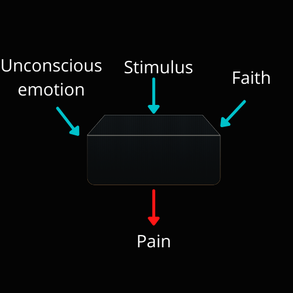

This is the absolute best advice for those suffering with chronic RSI, like Tennis Elbow, Carpal Tunnel, Trigger Finger or other arm to hand Repetitive Strain Injuries.
I can tell you how to manage it and what to do to abate its symptoms.
What I am about to tell you is how to type forever.
What's funny about it, most programmers do not get RSI from programming. Programming is a pretty benign sport that I have rarely seen cause RSI.
Instead it is stuff like gardening, video games or a sport like tennis.
They develop the RSI separately and only after does it affect their coding.
Me, personally, I suffered from mouse finger pain, tennis elbow and wrist pain from playing video games.
Photo by Rebeka Yip
For 15 years from ages 14 to 29 I could not use my index finger to use a mouse.
I held the mouse awkwardly with other fingers and often those fingers would wear out too.
And, it wasn't from programming. It was from skilling for long periods in a game called Runescape.
At age 28 I developed wrist pain and tennis elbow in addition to that.
I could not code anymore and was on the brink of dropping out from college because I was in so much pain with my hands and wrists while doing homework.
I went to an orthopedic and he saw/heard my story and I asked what he could do for me. He took some scans and did a nerve test and said I had a narrowed cubital tunnel, causing nerve pain.
"Nothing, nothing at all, I can't do anything. We can do surgery, but I would have to cut into your wrist."
Hmm I wondered, should I go through with it? I stayed in that pain for 2 years, searching high and low for some remedy.
Well, guess what. I found it. Not only did I find it, but I discovered it had massive other benefits too. It is unbelievable!
Photo by Touann Vergos
Now I play video games as much as I want, code as much as I want and I have the freedom to go to the gym and lift!
After I discovered the cure for chronic RSI I went back to this orthopedic. He asked, "How is this possible, I never heard of this".
He has worked in the orthopedic industry for 25 years and said he has never heard of this.
But, if what I say is true he has been giving false surgeries for 25 years. Not only him but the entire orthopedic industry is absolutely wrong about RSI.
Let me tell you another story. This is the guy who introduced me to this cure for RSI.
His online name is SilentWolf. He had done video game speed runs for many years on console. He got a RSI from an intense competition, which I believe he won.
Photo by Sigmund
Progressively the condition of his wrists and hands worsened. Eventually after so many years of passionate speed running, he had to quit his beloved activity, video games.
Due to this injury he quit speed running for 9 years.
He also went to an orthopedic, rehabilitation and considered surgery.
However, someone told him about this cure for RSI.
Desperate and willing to try anything, he committed to the cure.
Within months he was back to speed running after a 9 year hiatus.
If you look at his YouTube channel history you will see a 9 year gap then a sudden return to speed running.
When I heard this story I could not believe it.
I reached out to Wolf and spoke to him over Discord voice. Is this stuff real? Does it really work? It is too unbelievable.
Photo by Free Stocks
He answered all my questions, "yes, yes and yes". This stuff is more real than, well... its real okay. It is like, really real.
He recommended a book on the topic and gave me the process which I wish to give you.
A New Model of Pain
In the orthopedic industry, college graduates are taught a mainstream model on the origins of pain.
Everyone is taught this model. We believe its real and give no second thought because, well, everyone believes it.
Let me show you what the pain model taught in most countries looks like:

Made in Canva
Imagine the box in the middle is your body. We receive a stimulus from activity such as video games, gardening, weight lifting, coding.
Out of the body from this stimulus, we feel pain, or simply we feel.
When I meet a coder or someone from church and they tell me they have RSI, this is the pain model they always believe in.
Time after time again my friends in the past lined up to their orthopedic and this is what they were told.
Quit your activity, increase grip strength, improve your flexibility & progressively overload.
These things more often did not work. I remember asking my orthopedic, "what is your success rate for people recovering without surgery?". Can you guess what he said?
This was his response, "Jesse, I have seen a less than 10% success rate with people in your position. Even with surgery it only goes up 10% and I believe it is because of rest. I wish I never got in this industry, it was hell to not be able to help my clients."
Not only did this orthopedic say that, but many. The sad truth is doctors have a suicide rate twice[1] that of the general population.
Can you guess why?
Because they are unable to help their patients who put their life in their hands.
Now, let me tell you the new model of pain, the true and real model of pain:
Made in Canva
If you come to believe in this model of pain and thoroughly follow the advice related to it. You will be cured.
Your pain will subside substantially all the way to nothing.
Imagine this, unconscious emotion is 40% the reason for pain, faith is 30% and stimulus is only 30%.
When we go to an orthopedic or a rehabilitation center, they only focus on 30% of the problem, the stimulus.
Yes, grip strength & progressive overload are important. But it is only 30% of the problem.
If you don't fix the rest, the pain is going to stay.
That is what happened to me, SilentWolf and many many others who suffered from RSI.
Now, it is time to talk about the actual cure. I will show you how to address all three sources of pain:
How to Address Emotional Disturbance
There is a connection between the body and the mind from which past emotional disturbance creates real injuries.
Many injuries and visible causes of pain are actually created through emotional disturbance.
And the cure is to develop an emotional congruence between peace and chaos.
Photo by Taras Chernus
This is perhaps the hardest sell in this entire article.
The benefits of addressing your unconscious are unbelievable!
The unconscious is a source of constant stress, anxiety and finally the main factor in RSI injuries.
This is the most important part of overcoming RSI. More than faith and more than stimulus.
This addressing of emotional disturbance is so profound, it even works in people who have chronic conditions.
Nicole Sachs is a great example and influencer on this cure.
Due to a terrible back disorder she had from birth, doctors told her she would be confined to a wheelchair and be unable to walk in older age.
They said childbirth would kill her and her chronic pain will be severe for her whole life.
For many years in her younger age she dreaded life with this disorder. Essentially, two lower vertebra are chronically broken apart, making her unable to lift or strain that part of her body.
She eventually discovered this pain model and committed to it.
Photo by Venti Views
Even with this condition she lives a normal and prosperous life with minimal to no back pain and even had children.
Of course she still has the condition, but the pain is minimal to none.
And of course she limits her physical limits to what a trained professional recommends.
She is not deadlifting and lifting heavy things. Though she does love jogging...
Nicole Sachs has her own podcast and book on the topic as well.
Now, finally we get to the primary method for addressing unconscious emotion.
There are many methods for doing this but the one I will show you is the best. If you want to see the others take a look at my article on general chronic pain.
Our method here is journaling...
How to journal
Your goal in journaling is to access your unconscious and reduce the present emotional distress caused from the unconscious.
Photo by ConvertKit
We start by listing our emotional experiences, past, present and future.
Think and remember topics and experiences which were and are emotionally harmful. Put them on a list and order them from most traumatic to least traumatic.
List at least ten for every time period; past, present and future:
Past
- Topic #1 (Most traumatic)
- Topic #2
- Topic #3
- etc.
Present
- Topic #1
- Topic #2
- Topic #3
- etc.
Future
- Topic #1
- Topic #2
- Topic #3
- etc.
Then write about this experience, with the goal of understanding why it was such a hurtful experience.
Try to understand yourself. Go deep into the why. Do not worry about what other people think.
This journal is not supposed to be read by others, but is an expression of your unconscious.
You can do this with a voice to text bot (I did this because of RSI), keyboard or hand written.
Photo by Nathan Dumlao
Write on that topic for minimum 20 minutes. You can go much longer, even past 1 hour. Continue on the topic until it feels thouroughly finished. Each topic on the list can last multiple sessions depending on its depth.
Afterward, meditate for at least 10-15 minutes on self-love and self-compassion with a video. Here is my personal playlist. Try to love yourself and forgive your past actions and others past actions. Tell yourself it is okay to feel these emotions.
These two actions come together, the journaling and the self-compassion for your expression.
The stuff written should include stuff you cannot tell others or even admit to yourself. Of course at all times after journaling you should commit to wise and prudent action.
But, always go deep and be truly honest with yourself. This is how to drudge through your past emotions.
I will give an example of a journaling topic which took me about 4 sessions to get through.
Photo by Priscilla Preez
For example, my father hated that I went into Computer Science and did not become a pastor or evangelist. He would often make remarks about my decision which derided me going to university.
For months I grew bitterly resentful of my father for being over religious.
I wrote down all my anger about hating my father, leaving my faith and wanting to just never talk to him again.
Of course I would never tell him I felt all these emotions.
And, I don't consciously feel these emotions. In actuality I unconsciously felt these emotions. These were things I buried behind mental walls.
I felt this bitterness and resentment to him and I did not know why. It grew and boiled and I was constantly angry and dreaded seeing him.
"I can't feel these emotions", they are dangerous. That type of thing.
Photo by Yannick Pulver
I wrote about these emotions at length and expressed them in writing.
I recognized my emotions, accepted them, then decided I would tell him "I love Computer Science and I love Jesus so please just love me as a son."
Of course, this is a mild example of how I went through an emotion. There were deeper, more traumatic experiences I went through, but this was the easiest one to make an example.
I never told anyone about these unconscious emotions and at the time it was 1 topic in the present out of many.
Through journaling and self-acceptance, the unconscious hurt I had over that experience was gone.
Afterward, one at a time I tackled every emotional experience until my chronic pain subsided then disappeared.
Remember, your journaling is not meant to be read by anyone else.
It is meant for you to understand yourself and why you feel what you feel, then accepting it and committing to wise/prudent action.
Photo by Flipsnack
I decided to feel love for my father through it. I showed him my best code applications and expressed my enthusiasm.
Eventually he let go of me being hyper evangelical and we continued on with life.
How to Address Belief
Now, just to note. Religious folk tend to either have a faith and stimulus pain model or just a faith model.
Ignoring unconscious emotion or stimulus will limit you quite a bit.
Faith alone does not cure RSI or any chronic pain. It reduces it but does not cure it.

Photo by Niklas Ohlrogge
For the sake of faith, the thing you must believe in is that the cause of your pain is primarily the unconscious emotion.
"My pain is stemming from unconscious emotion."
This is the phrase, this is the mantra that must be believed in order to experience the furthest RSI free life.
Another way is to believe you are healed or not injured. But, I have found believing in unconscious emotion is the most effective and the way I always recommend.
But, how in the world do you increase belief in unconscious emotion being the source?
The answer... is to constantly consume content which tells you so.
You will be surprised how well this works. I will give you 4 content-filled sources to improve your belief and come to see for yourself how important this is to curing RSI.
- John Sarno's content: Lecture & Books
- Nicole Sachs Podcast, YouTube channel
- Forum on pain
- Classic testimonial videos and a YouTube Search for testimonials
How to Address Stimulus
There are two camps of believers to this source of pain.
Photo by Peter Vanosdall
One, just return to normal activity.
And two, progressively overload your body.
If you want to be in camp one, just do everything like you did before the RSI and ignore the pain.
Obviously you address belief and emotion, but you simply resume activity and that activity will be your progressive overload.
Camp two, is what I will focus on here. I like this camp because it is friendly to those who already had surgery or have been in pain 10+ years like I was with my hand.
If we are to progressively overload our bodies, we must start with what we can do.
Photo by Cyril Saulnier
The focus for arms and hands should be increasing grip strength, building muscle and slowly coding/playing video games more and more as you can.
Grip strength is a clear indicator of how progressed your RSI is. A true injury makes you unable to grip with force.
My favorite exercises for increasing grip strength are, the deadlift(I do hex bar), pull ups (machine or free weight), bentover rows, farmers carry and kettlebell exercises.
Pretty much any lifting that uses your hands is great.
Your goal should be to increase the weight over time.
The higher your numbers become, the more resilient and pain free you will be outside your workouts.
And lastly, of course you want to set limits. If you have a chronic injury (like Nicole Sachs) or needed a surgery which makes you unable to lift heavy, just do the stimulus your orthopedic tells you.
Get guidance on your limits of strength training from a physical therapist. Obviously you can't lift 300lb deadlifts if you have a metal rod in your back. That is when you set lower limits to just keep you strong.
A Final Word
Now, there is a genetic factor to this.
There are people who naturally are more immune to pain from stimulus or emotion.
They have extraordinary grip strength or just don't get RSI at all no matter what.
Photo by Florian Olivo
I have met these people. On the spectrum of ability they can play 16 hours a day on a highly intense video game for their whole life and never experience these things.
These are the hands we were dealt (literally), just because they do not get RSI does not mean they cannot get something else.
Often, these people suffer from other pains like back and knee pain. If you want a more general introduction to pain in things other than RSI, check out my general article on pain.
(This post may contain affiliate links. Meaning, I get a commission if you purchase through my links, at no cost to you)
Resources
[1] Doctors statistics: https://a.co/d/8cOTsfy
Silent Wolf YouTube Channel: https://www.youtube.com/@SilentWolf444/videos
Nicole Sachs personal blog: https://www.thecureforchronicpain.com/aboutnicole
Nicole Sachs Podcast: https://podcasts.apple.com/us/podcast/the-cure-for-chronic-pain-with-nicole-sachs-lcsw/id1439580309
Nicole Sachs YouTube channel: https://www.youtube.com/@thecureforchronicpainwithn6857
Forum on general pain: https://www.tmswiki.org/forum/
Voice to text apps for RSI: https://techmonitor.ai/technology/free-voice-to-text-apps
Self-compassion playlist: https://youtube.com/playlist?list=PLQkE2a-N-0J8TQ7TWDsgQLu9xmLqwvpuL&si=DqFHldQv4rUQkSSW
One of John Sarno's best lectures: https://youtu.be/cbF2HMXtfZ4?si=iueGIkZahN_VzfKB
Example testimonial playlist: https://youtube.com/playlist?list=PLeF15HJLq05TwgFHg8V_465ozxafU0tAh&si=k_LF8S1Pm7GegMvR